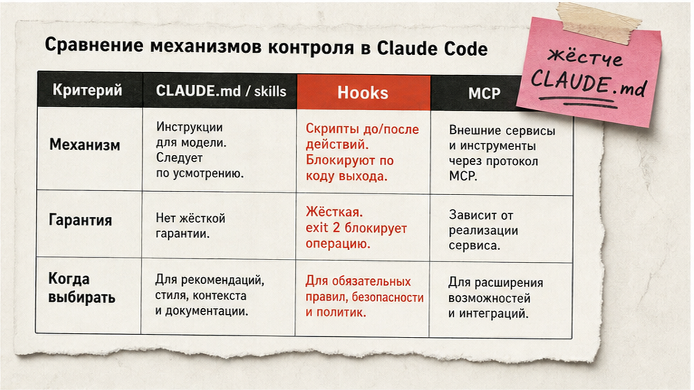
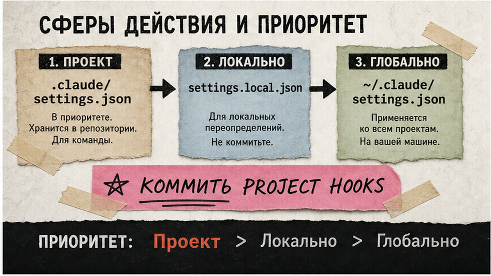
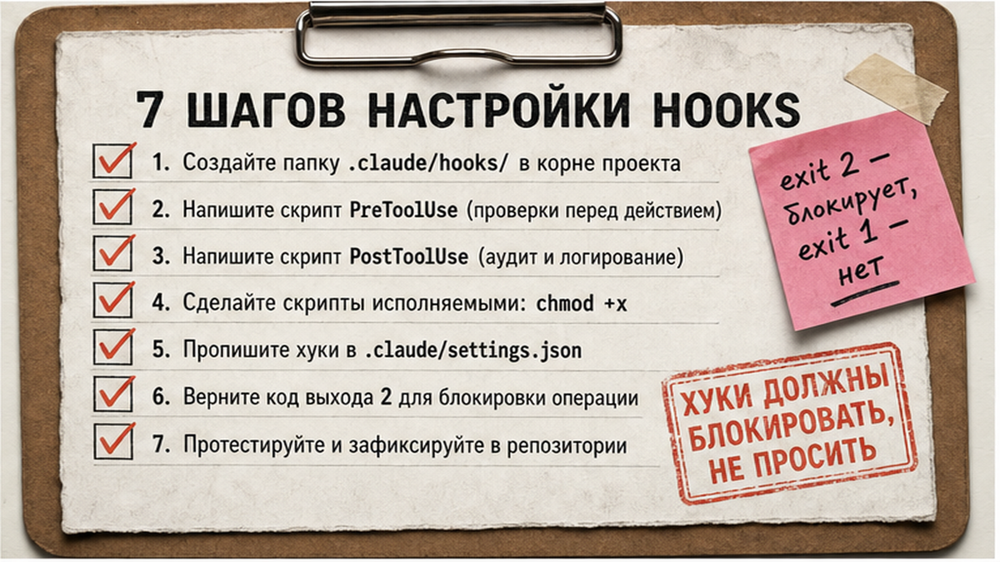

Claude Code выполняет команды, но без hooks вы снова просите "не трогай .env" и "запусти prettier". Настройка claude code hooks в settings.json занимает 20-40 минут: три рабочих hook (формат, защита секретов, bash guard), проверка через /hooks и понимание exit 2. После гайда у вас детерминированные quality gates, которые срабатывают каждый раз, а не когда модель "вспомнит".
TL;DR / Быстрый инсайт: Hooks в Claude Code – скрипты в settings.json на lifecycle events (PreToolUse до tool, PostToolUse после). Блокировка: exit 2 или JSON deny на exit 0; exit 1 только предупреждает. Командные hooks – .claude/settings.json в репо; личные – settings.local.json или ~/.claude/settings.json. Проверка: /hooks.
Hooks – user-defined обработчики lifecycle Claude Code: shell-команда, HTTP endpoint, MCP-tool, prompt или agent. Они живут вне основного контекста чата, поэтому не "съедают" токены, как длинный CLAUDE.md. MCP (Model Context Protocol) – открытый стандарт "розеток" для внешних сервисов в редакторе; hooks перехватывают события внутри Claude Code без отдельного сервера. Подробнее про MCP – в гайде по подключению MCP в Cursor; здесь – только hooks и settings.json.

CLAUDE.md и skills – инструкции в контексте: модель может их проигнорировать под нагрузкой. Hooks – код снаружи: после каждого Edit|Write prettier запустится, даже если агент "забыл". PreToolUse срабатывает до permission-check и может заблокировать tool даже в bypassPermissions или --dangerously-skip-permissions – жёстче любой фразы в CLAUDE.md.
| Механизм | Гарантия | Когда выбирать |
|---|---|---|
| CLAUDE.md / skills | Нет | Стиль и soft-правила |
| Hooks | Да, на событии | Формат, секреты, bash guard |
| MCP | Да, при вызове tool | Браузер, GitHub, CMS снаружи IDE |
Делайте: автоформат и .env guard через hooks. Не делайте: те же правила только в CLAUDE.md – exit 2 не заменить текстом.

| Файл | Область | Git |
|---|---|---|
| .claude/settings.json | Проект команды | Коммит |
| .claude/settings.local.json | Только ваш ПК | Нет |
| ~/.claude/settings.json | Все проекты | Нет |
Plugin hooks лежат в hooks/hooks.json плагина; skills могут объявлять hooks во frontmatter. Для команды автоматизации коммитьте .claude/settings.json; личные эксперименты – в settings.local.json (gitignored) или ~/.claude/settings.json.
Делайте: переменную $CLAUDE_PROJECT_DIR в путях к .claude/hooks/*.sh. Не делайте: хранить production guardrails только в global, если команда работает из одного репо – коллеги не увидят hooks.

Workflow: PreToolUse (Edit|Write / Bash) → exit 0/2 → tool → PostToolUse (Edit|Write) → prettier → Stop / Notification (опционально)
Фрагмент settings.json:
Фрагмент .claude/settings.json:
{
"hooks": {
"PostToolUse": [{"matcher": "Edit|Write", "hooks": [{"type": "command", "command": "jq -r '.tool_input.file_path' | xargs -I{} npx prettier --write {}"}]}],
"PreToolUse": [{"matcher": "Edit|Write", "hooks": [{"type": "command", "command": "$CLAUDE_PROJECT_DIR/.claude/hooks/protect-files.sh"}]}]
}
}
protect-files.sh (из hooks-guide):
protect-files.sh (из hooks-guide):
#!/bin/bash
FILE=$(jq -r '.tool_input.file_path // empty')
echo "$FILE" | grep -qE '\.(env|pem|key)$|/secrets/' && { echo "Blocked: $FILE" >&2; exit 2; }
exit 0
Делайте: echo '{"tool_input":{"file_path":".env"}}' | ./protect-files.sh – exit 2. Не делайте: exit 2 + JSON на stdout – JSON игнорируется при exit 2.
PostToolUse срабатывает после успешного tool. Matcher Edit|Write – regex через символ |. Handler type command – самый частый старт; timeout по умолчанию 600 сек для command. JSON на stdout при exit 0 может дополнить контекст, но для prettier достаточно shell.
PreToolUse inspect tool call до выполнения. Блокировка: exit 2 (stderr уходит в feedback Claude) или exit 0 + JSON с hookSpecificOutput и permissionDecision deny. Несколько PreToolUse hooks: приоритет deny → defer → ask → allow. Для Bash matcher проверяйте tool_input.command на rm -rf, curl|bash, drop table.
JSON deny на exit 0:
{
"hookSpecificOutput": {
"permissionDecision": "deny",
"permissionDecisionReason": "Destructive bash blocked by team policy"
}
}
Exit 1 и другие коды ≠2 – non-blocking для большинства events: tool всё равно выполнится. Для policy enforcement – только exit 2 или JSON deny на exit 0.
Делайте: отдельные matcher Edit|Write и Bash. Не делайте: тяжёлые тесты в PostToolUse на каждый save.
Notification (matcher пустой) – desktop alert: notify-send на Linux, osascript на macOS, PowerShell toast на Windows. SessionStart (startup|resume) – только type command или mcp_tool; stdout может дать additionalContext при старте сессии. Stop – проверка перед завершением агента (lint, незакоммиченные тесты).
В non-interactive режиме -p PermissionRequest hooks не срабатывают – для CI и автomation pipeline используйте только PreToolUse guards, не ждите диалога разрешений. Связка hooks в IDE + сценарии Make/n8n описана на курсе Make.com.
Делайте: SessionStart с git branch. Не делайте: длинные prompt-hooks в SessionStart.
| Exit | Поведение | Когда |
|---|---|---|
| 0 | JSON на stdout работает | Allow или JSON deny |
| 2 | Block, stderr → Claude | Секреты, destructive bash |
| 1, ≠2 | Non-blocking | Лог, не policy |
Официальный reference перечисляет 30 hook events; команда /hooks – read-only browser с source layer User/Project/Local/Plugin. Типичные ошибки: matcher Edit вместо Edit|Write; скрипт без chmod +x; exit 1 вместо 2; битый JSON wrapper; смешение exit 2 и JSON на stdout. Сообщение hook error в transcript – смотрите stderr и /hooks source layer.
Делайте: версионировать .claude/settings.json и hooks в Git. Не делайте: inline shell на 20 строк в JSON – вынесите в .claude/hooks/.
Материал проверен: эксперт Артур Хорошев (CEO Maya AI, Claude Code и Make).
Достоверность данных: exit codes и 30 events – docs Claude Code, 08.07.2026; без выдуманных показов Вордстат.
Это обработчики в settings.json (command, http, mcp_tool, prompt или agent), которые запускаются на lifecycle events – от SessionStart до PostToolUse. Они выполняются детерминированно, вне основного контекста чата. Добавьте блок "hooks", положите скрипты в .claude/hooks/ и проверьте список командой /hooks.
Откройте .claude/settings.json, добавьте ключ "hooks" с массивом по имени event (PreToolUse, PostToolUse и др.), внутри – matcher и объект type plus command. Сохраните JSON, перезапустите сессию Claude Code и откройте /hooks – должны отображаться event, matcher и source Project.
PreToolUse срабатывает до tool и может заблокировать вызов через exit 2 или JSON deny. PostToolUse – после успешного tool: форматирование, аудит, уведомления; уже выполненное действие не отменит. Для секретов и bash используйте PreToolUse; для prettier – PostToolUse с matcher Edit|Write.
Скорее всего exit code 1, а не 2: для большинства events exit 1 non-blocking и tool выполнится. Для policy enforcement используйте только exit 2 или JSON permissionDecision deny на exit 0. Проверьте код выхода: echo test JSON | ./script.sh.
Skills – инструкции и workflow в контексте модели; hooks – код и команды снаружи, с гарантированным запуском на событии. Skills задают "как думать"; hooks – "что всегда сделать или запретить". Не заменяйте bash guard текстом skill.
MCP подключает внешние tools и данные (браузер, GitHub, CMS) к агенту. Hooks перехватывают lifecycle внутри Claude Code без отдельного сервера. Связка: MCP для интеграций, hooks для format и security gates; см. подключение MCP.
Командные hooks – .claude/settings.json в репозитории (commit в Git). Личные overrides – .claude/settings.local.json или ~/.claude/settings.json. Enterprise может включить allowManagedHooksOnly – тогда user/project hooks блокируются политикой организации.